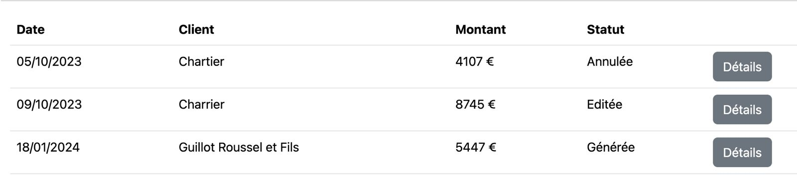
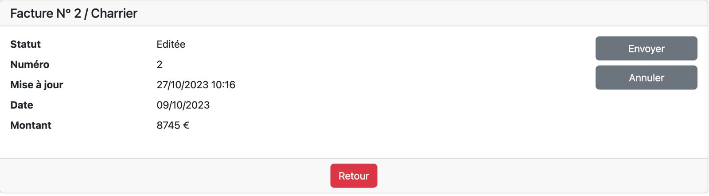
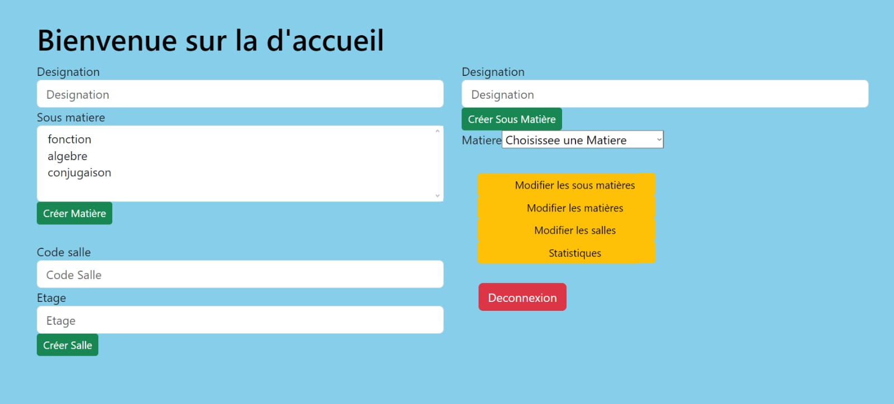
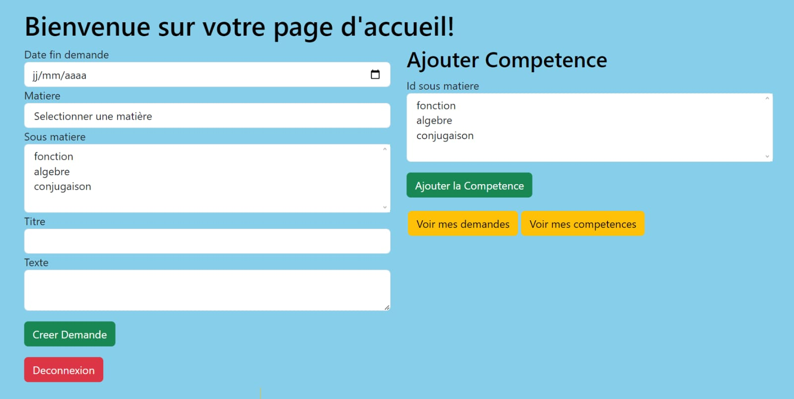
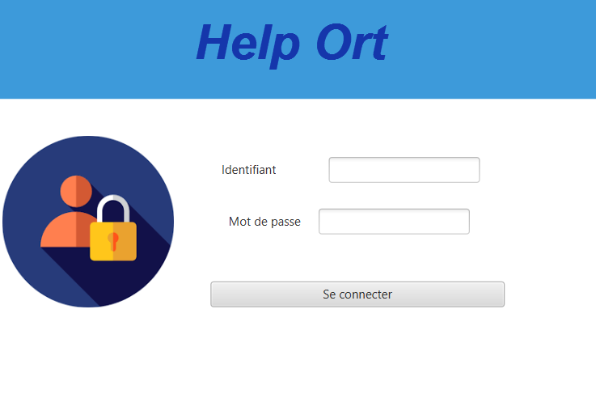
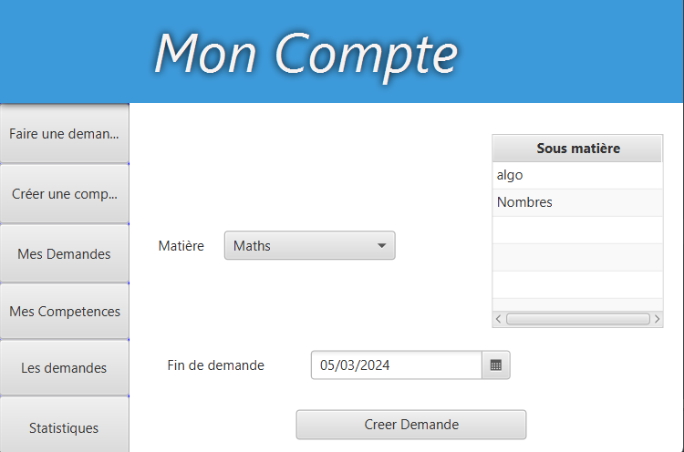

Durant cette formation j'ai effectué de nombreux projets qui m'ont permis de développer mon niveaux de compétences et de rendre plus concret les différents concepts qui m'ont été enseignés.
J'ai pu faire des projets de différentes tailles et qui ont pour but de me faire travailler différentes compétences indispensables de l'informatique. (Algorithmie, POO etc...).
Ce Projet a été effectué lors de mon apprentissage du framework PHP Symfony, pendant ma seconde année de BTS.
L'objectif était de développer un système efficace permettant de générer et de visualiser les factures à différents stades : en attente, validée ,envoyée... et tout était relié à une base de donnée
Lien du code sur Github: workflow
Voici un workflow concernant des factures
 Le projet Help'Ort est le plus long et le seul que j'ai fait en équipe, ce qui m'a appris beaucoup sur la gestion de projet.
J'ai souvent sous-estimé cet aspect en pensant que ce n'était pas si important, mais après ce projet ça a bien changé.
Avec mon équipe nous avons appris à utiliser de nouvelles technologies et nous avons approfondi l'apprentissage du framework symfony.
Ce projet consiste à créer des demandes de soutien entre élèves pour les matières souhaitées et les professeurs peuvent créer des matières ainsi qu'attribuer une salle pour le soutien créé.
Page d'accueil d'un proffesseur
Page d'accueil d'un élève
Ce projet, réalisé avec JavaFX, visait à créer des graphiques à partir de données stockées. Il nous a permis de nous initier à la manipulation de JavaFX pour la création de visualisations graphiques, illustrant des tendances telles que les mouvements d'actions, les prix d'achat, et plus, directement à partir de notre base de données.
Ce projet de cabinet médical, développé avec Java et JavaFX, propose une interface permettant aux patients de prendre des rendez-vous facilement. Les rendez-vous étaient affichés dans un planning, offrant une vue claire des rendez-vous à venir.
Cette application nous a permis de mettre en pratique nos compétences en développement logiciel tout en répondant aux besoins du domaine médical.
Le projet Help'Ort a été mon premier projet en équipe, ce qui m'a permis d'apprendre beaucoup sur la gestion de projet.
Avec mon équipe, nous avons exploré de nouvelles technologies et approfondi nos connaissances en utilisant Java.
Ce projet visait à créer des demandes de soutien entre élèves pour les matières souhaitées, tandis que les professeurs pouvaient créer des matières et attribuer des salles pour le soutien.
Voici la page de Connexion
Voici la page de Demande
